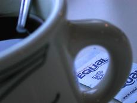
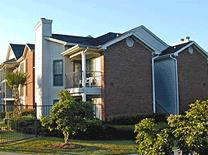
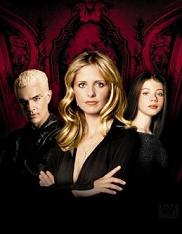

I really hate finals. For me, the semester ended Thursday. I have a Spanish final in about 3 hours. I haven't really studied for it, and despite this, I didn't have the nagging nightmares I usually do about tests I'm not prepared for. IT'S THE LAST TEST! I don't care, all I'm thinking about is getting a job, making some money, and buying a new computer! I've been looking at some Dell notebooks, and you know I don't like to conform, but a 3 year warrenty would be very nice for someone like myself.
Probably not going to party with Marilia tonight, but we're looking toward Friday or Saturday. If we go Saturday, we'll go to My Sister's Room (not my actual sister's room, that's gross...coincidently, it used to be my room). I really want to go to Ohio Saturday, but that isn't going to likely happen...my mother has yet to inform me of the good news. I am really banking on that car so I have a way to get around for work. June 1st...I need $285 for rent. I know I can do it. I'm pretty sure I can swing the cable bill and skimp on food until then. I'm fat anyways.
I can't wait to start repaying back all my friends who have been there for me car-wise. You know how that goes...I'm going to have to be the DD and such. Maybe those Corona's at my house will be alittle more appetizing, huh Gen? ;-)
Anyways...enough stalling. Tests to do and such. I feel very good, despite impending doom. :-)

It's here. One year ago, I started my relationship with Matt. It all started with a trip to Atlanta with him, Barry and Stef. We went to Barry's friend's house in Atlanta to drop off some of his things. We meet his friend, she was nice, her mother gave us rice balls. Afterwards, we went to some diner in Atlanta. I remember being an idiot, calling alot of attention to our table. It was raining, and since Dunkin Donuts was either closed or not accepting credit cards, we decided to have a meal instead of braving the storm. Finally, after the rain cleared, we went back to Athens and Stefanie's apartment. We stayed there probably because we didn't want to night to end. We all decided to pile into Stefanie bed and attempt to sleep. I laid next to Matt despite the weird new feelings I had been feeling for him. We had been friends for months before this moment, and that wasn't something I wanted to jeopardize. I don't know what it was, but I really cared about him, and lying there next to him that night felt really good. He kissed me on the forehead, and I drifted to sleep...
In other news, had a very interesting trip to Atlanta last night. I must admit, though, the orgy that ensued afterward was much more interesting. Kinda, yah, nice, I guess...

So yah, weirdness! I went away the next morning confessing to Missy what had happened. It was odd, he showed up at Snelling the next day too with Barry likely talking about the same thing. I knew I had to talk to him. I told him I'd give him a call, and after an exhaustive day of Honors Option paper writing, I called him on Wednesday. I told him that I did have feelings for him, and I knew that he had just got out of a relationship, and I wanted him to know if he didn't want to pursue anything, that was alright. I told him if he didn't feel the same way, that was ok. He said, "Um, I think I do."
Today is a special day. I won't say why.
I was scared at first. It seemed that the prospect of me and Matt was a very scary thing. He and I shared alot of the same friends, and it's just wierd having them go through that ackward transition. I told John about it and he was floored. Jeremy told me that relationships between friends are kind of problematic and that he personally avoided them. Everyone else seemed cool with it, but I still kept it on the down low for just a while longer...
Probably shouldn't get too much into this here, but I'm sorta dating someone now...I won't say who, mostly because it would be viewed as DRAMA by SOME people, and it sorta is. I've told many people about it, I think I may reveal later on...fo sho ;-)
I got over it eventually. He lived in Lilburn, later Athens, that summer and I lived in Marietta. On our first official date, he and I went to HOOTERS. Yes, God knows I love Hooters, and we had a nice time together with hooters. Afterward, we went to this movie theater near Lilburn and saw Chicago. I'd never seen it, but I liked it a whole lot. Plus, it was nice sitting next to him during the whole thing. When I dropped him off at home, we listened to "So Like a Rose" by garbage and I got to kiss him before he went inside. Fittingly, the night ended with "Shut Your Mouth" as I scooted him inside. Anyways, I guess that's when the relationship started...
Got to spend time with Matt, the person I'm dating. Yah, fun times, we browsed Borders and looked at all the pretty things we'd like to own but would never buy from Borders because they overprice EVERYTHING. At least I got to buy him lunch...hehehe ;-)
The summer consisted of me working at Taco Mac and coming up every other week to do Lambda orientations (secretly a cover to come see Matt, of course). We had alot of fun on those early days on his very bare white bed. It was here where the shared Buffy obsession began. Whether it was at his apartment or Barry's we were slowly progressing through the early seasons, two and three.

What else...well, this summer I dated Matt. I know I haven't wrote much about it, because honestly, I've learned that it's really tacky to write shit like that in your journal...ESPECIALLY your internet journal. I love Matt, that's important. He's something special to me, and if I choose to hold onto that and not dole it out to everyone I can, that's my choice. It doesn't make it any less special. I just think the whole "boyfriend" thing is so weak. Matt doesn't define me, and I sure hope I don't define him. It's just there, and by some miracle, it remains. I figure the fall will be a challenge. Maybe, as this whole messy love thing goes on, I'll have more to share, but I just feel like it's important to say that this summer would have been very different if I didn't have such a cool guy like Matt to tool around with.
An interesting aspect of my relationship with Matt and its relationship to my Blog is that I choose not to elaborate on the finer points in a place like this. As much as I love my Blog, I realize that the intrusive nature of an internet journal only yields a malicious effect on my relationship with Matt when I choose to talk about that here. In other words, just because you don't hear much about him, doesn't mean he isn't a large part of my life.

Matt has been my stablity this year. Before I was with him, I felt like I was just a loose leaf in the wind, constantly being blown around into mini tornados or what not. You know what I mean. Since I've been with him, I've been able to embrace a very fruitful relationship. I have learned to foresee beyond just the semester before me...
This semester held alot of things I didn't expect I'd do. I'm still dating Matt, and I honestly never saw it lasting this long, and I like taking it on without any expectations. I like being surprised by that, realizing that a relationship with someone doesn't need to conform to some time expectation. I guess I'm saying I see the value of where I've been and not what I expect there to be. There are no expectations.
Yah, so we stayed together through Christmas. It was difficult not seeing him through the break, except of course getting to see him on New Year's. In the new year, the both of us embraced a carless lifestyle, both forced to rely on the bus to get around. It has been hard, but we've somehow managed to get by.
This year has been really wonderful. By some miracle, I've been able to maintain a loving and strong relationship with someone I think is beyond amazing. Matt has been one of the most positive influences on my life. He's such a wonderful and caring human being, he makes me feel that if someone that amazing can have the slightest interest in me, it must mean there's something about me that's worth something. Things have been rough at times, but I continue to stand by him and support him. He's one of my best friends and he's the man that I love. Here's to another year.
Once again, if I seek to say anything meaningful here--anything whatsoever--it's this:
I love Matt.

Did you like the Matt thing? Yah, that was something I was working on for a little while. Much love goes to the little nice one named Matt Stephens. For the occasion, he gave me a very soft stuffed dog that is so precious I find myself unable to let the thing go. It's just so damn cute, I don't know what to say! It baffles me that something so soft and adorable can keep my attention as long as it has. Certainly it will be sent to my stuffed animal shelf on the double...but not until I pet it just a little longer 0:-)
Anyways, finals continue to assault me. I fear I'm losing, but in response to last few weeks and the mad dash to write papers, I'll give you all an update:
- Seven page Spanish paper (in Spanish!): 87
- Third Fink Term Paper: A-
- Advanced Creative Writing Paper: A for the paper, likely...I got an A in the course :-)
- Final Modern Drama Paper: Will find out today
- Shakespeare Image Study: 91
I achieved a goal! I wanted to get an A on the image study because I wanted Vance to know that though I fuck up at each one of his tests, I'm still assimilating the course in some way. I mean, what the hell?! How am I supposed to memorize the whole frickin' play!! It's very difficult.
Um, yah, so I think I may sleep for a while and take on the last final, that being Modern Drama. I applied at Dial America today to begin the amassing of rent funds. I really hope it's an easy job that gives 30 hours a week at $8 an hour. If I can make that much money this summer, I will be set.
One passing note...I'll be getting my car soon, and I can't help but notice as I zip by on my bike that gas prices are rising higher and higher. For months, my credit card has been lucky enough to stay outside of a 50 foot radius of any gas station, and it's just a little disturbing subjecting it to those transactions once more. I just don't know what's to be done. I said it before, but didn't we just fight and win a war for oil?! Can you cut me a break Dubya? If you're going to profit from this war, would you mind spreading that wealth around? Come on! I just don't understand.
Anyways, off I go to slumber party!
So I got into a fight today. Yah, I know, I know. He started it! (btw, my buddy list is much smaller thanks to the departure of all those annoying dorm people, alas...and Jeremy! :'(
Ok, I'm sick and tired of people bullying me with their cars. It's a simple concept, people. SHARE THE ROAD! So I'm riding down Lexington and these people are really making me upset. The like to slow down as they approach me, making me feel like I'm taking up such a huge portion of the road that they can't get their cars around me. I'm sorry, but I'm in the shoulder, you have plenty of room to get by. You don't have to rev your engine at me as you fly by. I'm sorry I caused you such a horrible inconvenience.
Well, I continue to the Loop connector and as I'm crossing the crosswalk during a green light even, some guy honks at me. At this point I had it...so yah, I flicked him off, told him to go fuck himself, and went about my business. It was funny how he slowed down, like he was actually going to do something about it. It's one way onto the interstate baby, go with the flow! Well, it's not actually an interstate, but you know what I mean. Also, it's a car people. It's not a throne, you're only going about 20 miles-per-hour faster then I am, and at least I'm saving $30 a week. Just chill out and stop honking at me. Also, I'm cuter.
I had Ramsay's final today. It went well. By some miracle, I nailed the identifications. Ramsay also choose the minutes before the final to tell us the reason he wasn't giving us back our papers was because someone has plagerized there's. He then handed out the final, warning that he'd seek the maximum penalty if the person did not come forward by 9 a.m. Monday. Can you imagine? Taking a final that is likely moot at this point...sitting there for 2 hours stressing over whether or not he caught you. I never plagerize, I'm too cheap. Can you imagine? Uh, they probably charget $50 plus for something like that. Too rich for my blood. I'm too cheap to buy Bacardi, I have to buy Everclear :-$
Anyways, going out w/ Marilia. I'll let you know how it goes. Adios folks.
We had fun last night, we went to Kristin's Birthday Party at her place at Shenendoah. I got to drive Marilia's car because she was plastered :-p Well, not exactly, but she tried. Kristin is engaged, believe it or not! She's going to marry Chastidy. That's pretty wild, best of luck to the happy couple.
I've had the strangest night tonight. My aunt just won $1 million dollars in Las Vegas and she's promised me $2000 of it. This is pretty damn amazing, it sort of squashes any financial woes I may have at the moment. I'm going to buy a new computer with it and sort out any debt I have. I think the most important thing I want to repay is Matt his $150 for the Madonna concert we are going to in June. It's funny, it turns out my aunt wants to go back to Vegas at the end of the month and they want to take me along this time and they want me to go to the Madonna concert then. Two Madonna concerts...the suggestion is terrifying. Oh, yah, with the other $1000, I'm going to buy a new computer! :-D
Yah, and then there was a car wreck on my street right after I talked to my sister for the second time about the million dollars. It was so loud, apparently some drunk hit a tree. Dumbass. What an idiot.
So this is supposed to be some "End of the Year" Blog, but I don't know why I said that. I really just consider the last Blog of the Spring semester to be the end of something. Summer Blogs are usually shorter and less interesting (except for last year when I burned my face off...that was certainly the most interesting). Basically, I feel better than I did at the end of Fall semester. I may not have achieved every goal, but when I really pulled it together there at the end of the semester, I proved that I could write and that I was smart and that if I applied myself, things do turn out for the better. This summer, if I can only work on the procrastination, everything will be A-OK.
A note on last night...Marilia was really funny when she was drinking. She was so trusting of me too, she kept taking the hunch punch I kept handing her like it was water. I mean, I know the stuff tastes like it's not alcohol, but that's the illusion. She didn't get too far along on the buzz, so I guess that's good for a first time. I wish she would do it more often, I think she'd find her bed quota rising. Quote of the night: "I want Missy to get inside me!" ~Marilia (it's not what you think :-X
Anyways, I'm still here, so don't forget about me. See you next week. Same Blog channel, same Blog musings.